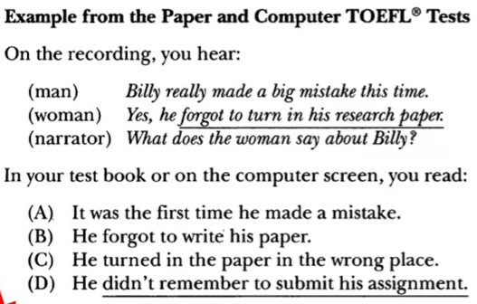
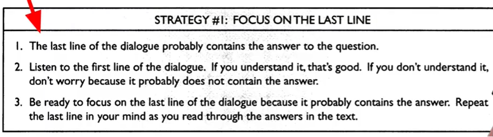
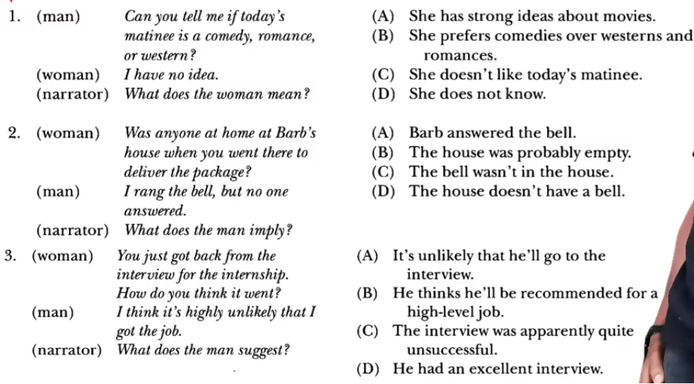
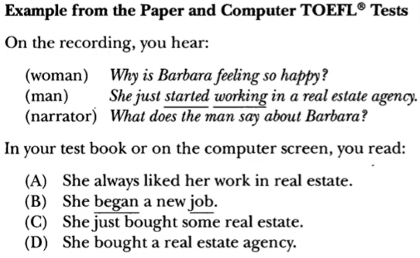
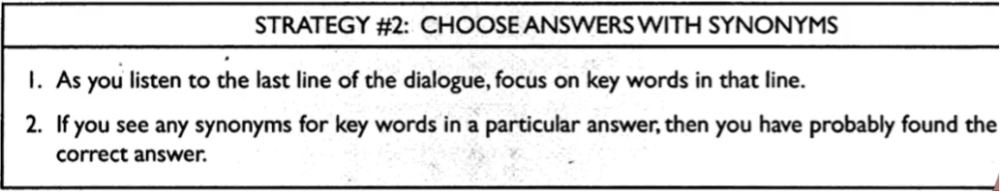
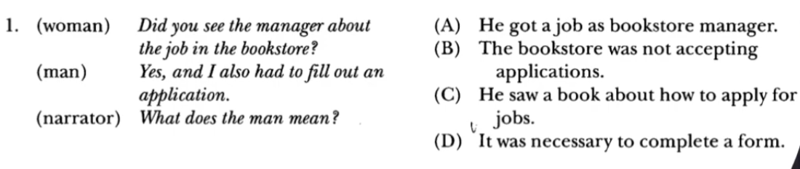
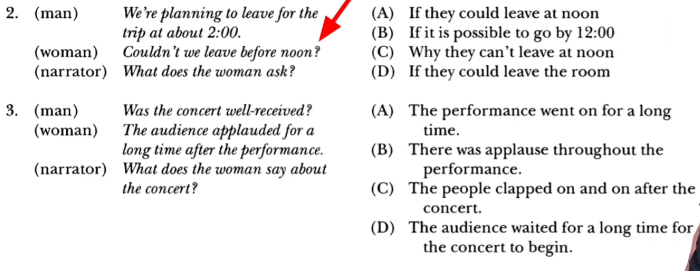
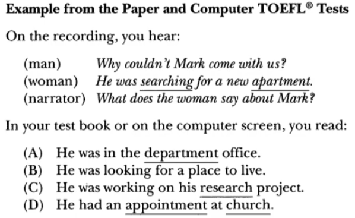
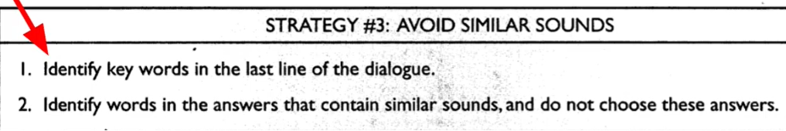
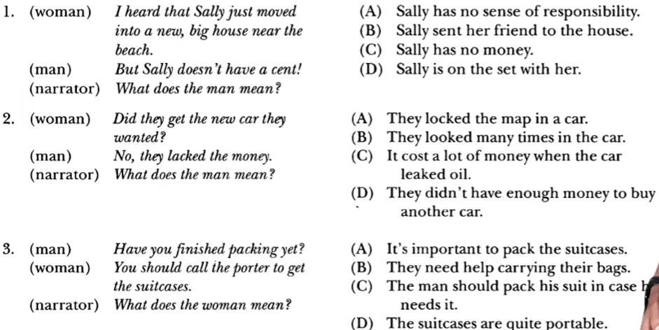

Materi Belajar
TOEFL Listening — Skill 1-3
Focus on the Last Line, Synonyms & Avoid Similar Sounds
Pelajari teori lalu uji dengan latihan interaktif (dengarkan audio, feedback langsung).
SKILL 1 — Focus On The Last Line
Focus On The Last Line
Percakapan akan melibatkan dua orang (percakapan pendek). Untuk mencari jawabannya kadangkala kita harus memperhatikan di akhir percakapan.


Contoh:

📝 Latihan Interaktif — Skill 1
SKILL 2 — Choose Answer With Synonyms
Choose Answer With Synonyms
Seringkali jawaban yang benar dalam dialog pendek itu berisi synonim yang menjadi kata kuncinya.


Contoh:


📝 Latihan Interaktif — Skill 2
SKILL 3 — Avoid Similar Sound
Avoid Similar Sound
Biasanya dalam percakapan pendek jawaban yang mengandung 'bunyi' yang sama itu harus dihindari.


Contoh:
